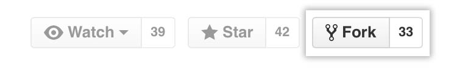

Contact
The developers of FERRET are
Dr. John Mangeri: johnma@dtu.dk
Dr. Olle Heinonen: olle.heinonen@gmail.com
Dr. Lukasz Kuna: lukaszkuna24@gmail.com
Dr. Serge Nakhmanson: serge.nakhmanson@uconn.edu
We ask that you cite Mangeri et al. (2017) if you use FERRET for the ferroelectric phase field method. A corresponding BibTeX entry is:
@article{Mangeri2017,
title={{Topological phase transformations and intrinsic size effects in ferroelectric nanoparticles}},
author={Mangeri, John and Espinal, Yomery and Jokisaari, Andrea and Alpay, S. Pamir and Nakhmanson, Serge and Heinonen, Olle},
journal={Nanoscale},
volume={9},
pages={1616-1624},
year={2017},
publisher={Royal Chemical Society}
}
If you use the micromagnetic or multiferroic phase field simulation capability, please cite:
@article{Mangeri2023,
title={{A coupled magneto-structural continuum model for multiferroic BiFeO₃}},
author={Mangeri, J. and Rodrigues, D. and Biswas, S. and Graf, M. and Heinonen, O. and Iniguez, J.},
year={2023},
journal={Physical Review B},
volume={108},
number={9},
pages={094101}
}
If you use the Fast-multipole boundary element method (FMM-BEM, ScalFMM), please cite:
@article{Jiang2016,
title={{An O(N) and parallel approach to integral problems by a kernel-independent fast multipole method: Application to polarization and magnetization of interacting particles}},
author={Jiang, X. and Li, J. and Zhao, X. and Qin, J. and Karpeev, D. and Hernandez-Ortiz, J. and de Pablo, J. J. and Heinonen, O.},
volume={145},
pages={064307},
year={2016},
journal={Journal of Chemical Physics}
}
A methods and benchmarking publication is in the works which will supersede some of these requests in the future. We invite the community to contribute to this effort. You may contact one of the developers if you are interested.
It should be mentioned that you should quote the relevant MOOSE papers in your publication if you use certain MOOSE objects or protocols (which you are). Please see here.
Contribute
There are many aspects of ferroics or other electronic phenomena (i.e. piezo- and thermoelectricity or electrooptics) that are not currently implemented in FERRET. We aim to expand the capabilities of this module extensively in the future. As such, ANY contribution to our code base is welcome! Please consult our documentation or contact the developers for help with code changes.
Bug Report / Feature Request
Contribution isn't only about writing code. If you identify a bug, or feel an important feature is missing, tell us and it is a great way to contribute. Go to FERRET issue page for a list of currently open and closed issues.
Click on the New issue button to submit a ticket.
Code Development
FERRET exists under the GNU General Public License. As such, it is permissible to make changes to the source code of FERRET, but DO NOT make changes to mangerij/ferret as you don't have write access. To propose changes properly, you need to fork FERRET under your own GitHub account, make modifications in your fork, and submit a pull request to the relevant branch (in this case: mangerij/ferret ).
Fork FERRET
Log into your GitHub account, navigate to the mangerij/ferret repository.
In the top-right corner of the page, click Fork

After the forking process is done, you should be able to find your fork under your GitHub account, i.e.
https://github.com/YourGitHubUsername/ferret.
Create a local clone of your fork
Now that you have a fork of mangerij/ferret under YourGithubUsername/ferret, you can setup the workflow for your fork. First, open a terminal, navigate to the FERRET repository, and verify your current remotes:
cd ~/projects/ferret
git remote -v
Your remote should look like the following:
origin https://github.com/mangerij/ferret.git (fetch)
origin https://github.com/mangerij/ferret.git (push)
Next, let's add your fork of FERRET to the remote:
git remote add YourRemoteName git@github.com:YourGitHubUsername/ferret.git
git remote -v
and the output should look like the following:
origin https://github.com/mangerij/ferret.git (fetch)
origin https://github.com/mangerij/ferret.git (push)
YourRemoteName git@github.com:YourGitHubUsername/ferret.git (fetch)
YourRemoteName git@github.com:YourGitHubUsername/ferret.git (push)
Next, you may checkout the devel branch of FERRET to your own development branch and let it track your own fork of FERRET, i.e.
git checkout origin/devel
git switch -c YourBranchName
git push -u YourRemoteName YourBranchName
Now, you may begin your code development. Just remember to add and commit often, i.e.
git add -A .
git commit -m 'Some commit message'
git push
Often times, during your development, the devel branch of mangerij/ferret may have new commits since your last checkout. To integrate new commits into your development branch, do:
git rebase -i origin devel
Additionally, please use the issues system to label your commit message. Github will automatically assign the commit log to the issue which allows for ease of tracking code changes.
If you would like to make changes to the documentation (and/or this website), follow these instructions
Pull Request
After you've added commits to your fork of FERRET, you can submit a pull request and request our review. Follow these instructions to create a pull request. Once you've opened a pull request, you will notice that a continuous-integration build automatically starts.
Once all the regression tests in the continuous-integration build passed, and someone (not yourself) reviewed and approved your pull request, your proposed pull request will be merged into the devel branch of mangerij/ferret.
Thank you!
A special thanks to all of the collaborators/co-authors of the various projects using FERRET.
We also would like to thank the code contributors and developers from Idaho National Laboratory for their continued supportc.
A particular recognition to MOOSE team member Dr. Casey Icenhour for help with the documentation of this website.
References
- John Mangeri, Yomery Espinal, Andrea Jokisaari, S. Pamir Alpay, Serge Nakhmanson, and Olle Heinonen.
Topological phase transformations and intrinsic size effects in ferroelectric nanoparticles.
Nanoscale, 9:1616–1624, 2017.[Export]